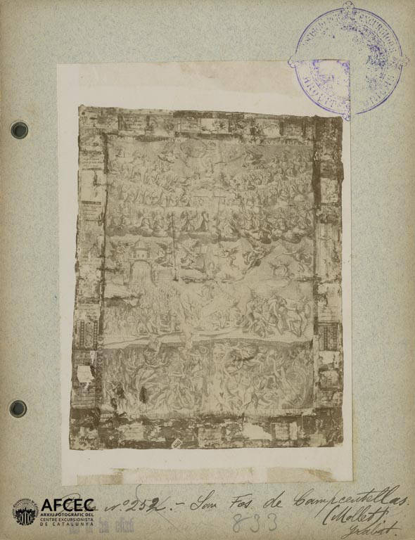
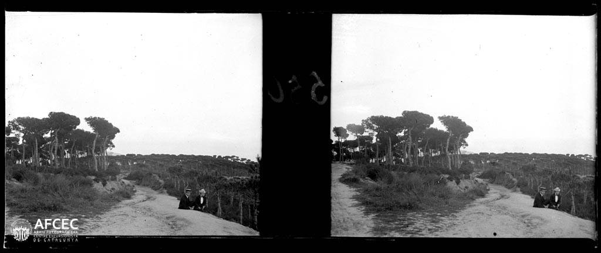

En investigació
El Cau Brunet
La torre miranda noucentista de Llorenç Brunet, construïda el 1916 com a museu, estudi i punt de trobada d'excursionistes.
Llegir l'article →
En investigació
La Conreria
De l'ermita de Santa Maria de Montalegre i les dones deodonades del segle XII a l'hostal de la família Autonell.
Llegir l'article →
En investigació
La Colònia Bosc
La primera urbanització d'estiueig de l'Estat espanyol: l'arquitecte Joan Amigó i Barriga, el Mas Po-Canyadó i el Turó del Reig.
Llegir l'article →
En investigació
La Font de les Monges
Un edifici mític del segle XIII, els aplecs de sardanes dels anys 20 i les llegendes que encara li acompanyen.
Llegir l'article →